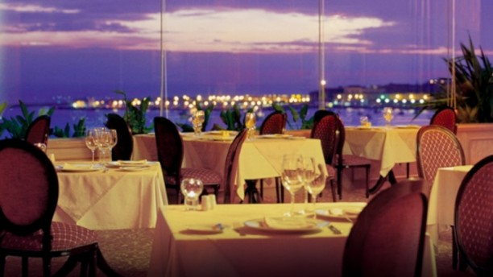

Uma vista única sobre a Marina de Cascais acompanhada de uma carta requintada. O galardoado restaurante Gourmet é um dos mais elegantes espaços do Hotel, gozando de uma vista única sobre a Marina de Cascais, um discreto e cuidado serviço, aliado a um requintado menu e escolha de vinhos, proporcionam experiências que combinam a cozinha de Autor com os mais frescos ingredientes.